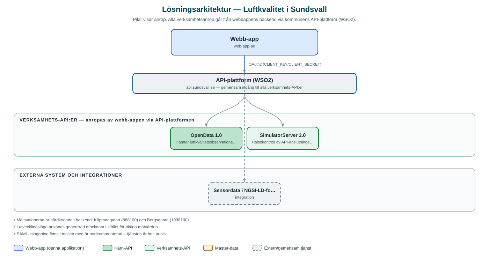

Luftkvalitet i Sundsvall
Publik webbsida som visar uppmätt luftkvalitet från kommunens mätstationer i diagram och tabeller.
Om applikationen
Tjänsten visar luftkvalitetsdata för Sundsvall från mätstationerna vid Köpmangatan och Bergsgatan. Besökare kan se halter av partiklar (PM2,5 och PM10) och kvävedioxid (NO2) för olika tidsperioder – från senaste dygnet upp till ett år.
Data hämtas från kommunens öppna data och presenteras som grafer och tabeller, med stöd för flera språk. Tjänsten är helt öppen och kräver ingen inloggning.
Repot är byggt på kommunens webbappsmall och delar av mallens texter och konfiguration finns kvar, vilket tyder på att tjänsten är förhållandevis ny.
Det här stödjer applikationen
- Luftkvalitet per mätstation – Visar uppmätta halter från stationerna Köpmangatan (PM10, PM2,5, NO2) och Bergsgatan (PM10, PM2,5).
- Valbara tidsperioder – Data kan visas för dygn, fyra dygn, vecka, månad eller år.
- Diagram och tabeller – Mätvärden presenteras som grafer och i tabellform.
- Flerspråksstöd – Gränssnittet är översättningsbart via språkfiler.
Teknisk dokumentation
Nedan beskrivs hur applikationen är uppbyggd, vilka API:er den använder och vad som krävs för att driftsätta den. Informationen är härledd ur källkoden och dess konfiguration på GitHub.
Arkitektur

Applikationen består av en webbaserad frontend (Next.js/React (App Router) med react-i18next och Recharts) och en backend (Node.js med Express och routing-controllers) som utvecklas i samma kodbas. Verksamhetsanrop går via kommunens gemensamma API-plattform (WSO2) – frontend pratar aldrig direkt med underliggande system. Övriga integrationer som förekommer i koden: WSO2 API-gateway (api.sundsvall.se), Sensordata i NGSI-LD-format (AirQualityObserved).
Teknikstack
- Frontend: Next.js/React (App Router) med react-i18next och Recharts
- Backend: Node.js med Express och routing-controllers
API-beroenden
Applikationen konsumerar följande API:er via kommunens API-plattform. Versionerna är hämtade ur källkodens API-konfiguration.
| API | Version | Användning |
|---|---|---|
| OpenData | 1.0 | Hämtar luftkvalitetsobservationer (airqualities) per mätstation, kodverifierat anrop. |
| SimulatorServer | 2.0 | Hälsokontroll av API-anslutningen (enligt api-config). |
Konfiguration och driftsättning
- Miljöfiler för frontend (.env-example) och backend (.env.example.local)
- CLIENT_KEY/CLIENT_SECRET för API-gatewayn
- API_BASE_URL mot api-test.sundsvall.se i exempel
Noterbart ur källkoden
- Mätstationerna är hårdkodade i backend: Köpmangatan (888100) och Bergsgatan (1098100).
- I utvecklingsläge används genererad mockdata i stället för riktiga mätvärden.
- SAML-inloggning finns i mallen men är bortkommenterad – tjänsten är helt publik.
- README och delar av konfigurationen är kvar från webbappsmallen (web-app-starter).
Källkod
Källkoden är öppen och finns hos Sundsvalls kommun på GitHub. I källkodsförrådet finns även instruktioner för att klona, konfigurera och starta applikationen i egen miljö.